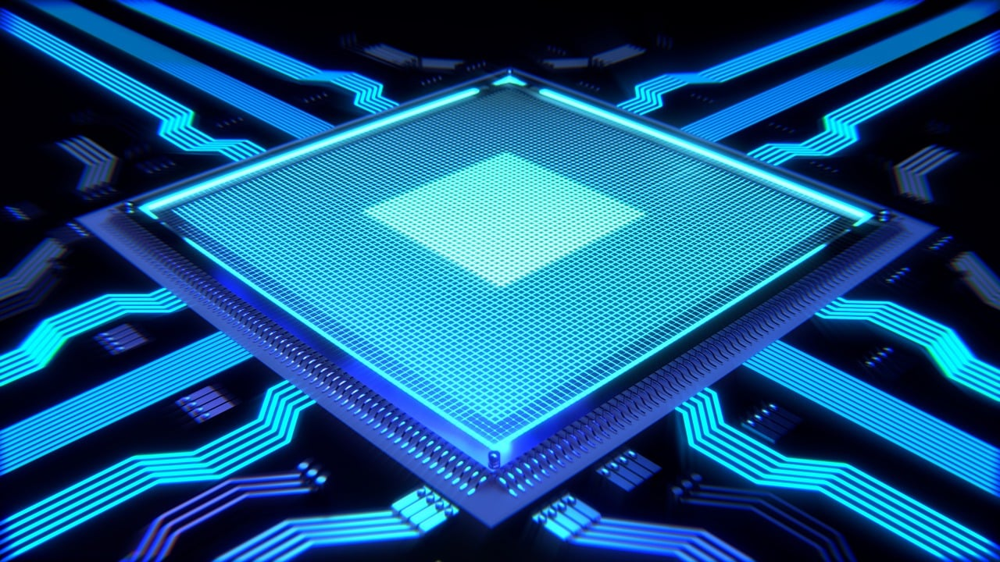

1.1 Modelos de Arquitectura de Cómputo
La arquitectura de computadoras es el diseño y la organización de un sistema para un equipo de cómputo. Es un modelo y descripción de cada función, así como los requerimientos y las implementaciones de diseño para varias partes del equipo de cómputo.
1.1.1 Clásicas
Estas arquitecturas se desarrollaron en las primeras computadoras electromecánicas y de tubos de vacío.
Arquitectura Von Neumann
La unidad central de proceso (CPU), está conectada a una memoria principal única (casi siempre sólo RAM) donde se guardan las instrucciones del programa y los datos. A dicha memoria se accede a través de un sistema interconexión de buses único (control, direcciones y datos).
En un sistema con arquitectura Von Neumann el tamaño de la unidad de datos o instrucciones está fijado por el ancho del bus que comunica la memoria con la CPU.El tener un único bus hace que el microprocesador sea más lento en su respuesta, ya que no puede buscar en memoria una nueva instrucción mientras no finalicen las transferencias de datos de la instrucción anterior.
Componentes principales de Von Neumann: Unidad de Memoria. Unidad de Entrada/Salida. Unidad de Control. Incluidos CPU. Unidad Aritmética Lógica. Incluida en CPU. Registros de Programas. Incluidos en CPU.Las instrucciones provenientes del sistema de entrada, son almacenados por la memoria, procesados por la ALU bajo la dirección de la unidad de control. Los resultados obtenidos son enviados a la unidad de salida. En las computadoras de programa almacenado, el programa puede manipularse como si se tratara de datos. Este concepto da origen a los compiladores, sistemas operativos y es la base de la gran versatilidad de las computadoras modernas.
Limitaciones del modelo Von Neumann: La longitud de las instrucciones por el bus de datos, que hace que el microprocesador tenga que realizar varios accesos a memoria para buscar instrucciones complejas.
Modelo Harvard
Esta arquitectura utiliza los Micro controladores, tiene la unidad central de proceso (CPU) conectada a dos memorias (una con las instrucciones y otra con los datos) por medio de dos buses diferentes.
Una de las memorias contiene solamente las instrucciones del programa (Memoria de Programa), y la otra sólo almacena datos (Memoria de Datos).Ambos buses son totalmente independientes lo que permite que la CPU pueda acceder de forma independiente y simultánea a la memoria de datos y a la de instrucciones. El tamaño de las instrucciones no está relacionado con el de los datos, y por lo tanto puede ser optimizado para que cualquier instrucción ocupe una sola posición de memoria de programa, logrando así mayor velocidad y menor longitud de programa.
La principal desventaja de esta arquitectura; el bus de datos y direcciones único se convierte en un cuello de botella por el cual debe pasar toda la información que se lee de o se escribe a la memoria, obligando a que todos los accesos a esta sean secuenciales. Limita el grado de paralelismo (acciones que se pueden realizar al mismo tiempo) y por lo tanto, el desempeño de la computadora.
1.1.2 Segmentadas
Es una de las tecnologías utilizadas para realizar la segmentación o paralelismo. Divide el procesador, en etapas, procesa una instrucción diferente en cada una y trabaja con varias a la vez.
Pueden trabajar de forma paralela, en diferentes instrucciones, utilizando una cola de instrucciones para su comunicación, denominado entubamiento.La técnica de implementación clave utilizada para hacer CPU.
La dependencia de datos y de control, que tiene como efecto la disminución del rendimiento del pipelining.
La segmentación de cauce (pipelining) es una forma efectiva de organizar el hardware del CPU para realizar más de una operación al mismo tiempo. Consiste en descomponer el proceso de ejecución de las instrucciones en fases o etapas que permitan una ejecución simultánea.
Las etapas están conectadas, cada una a la siguiente, para formar una especie de cauce las instrucciones se entran por un extremo, son procesadas a través de las etapas y salen por el otro. La productividad de la segmentación está determinada por la frecuencia con que una instrucción salga del cauce.
1.1.3 Multiprocesamiento
Se denomina multiprocesador a un computador que cuenta con dos o más microprocesadores (CPUs).
La arquitectura NUMA, donde cada procesador tiene acceso y control exclusivo a una parte de la memoria.

Para que un multiprocesador opere correctamente necesita un sistema operativo especialmente diseñado para ello.
La arquitectura NUMA, donde cada procesador tiene acceso y control exclusivo a una parte de la memoria. La arquitectura SMP, donde todos los procesadores comparten toda la memoria.
Los CPU de multiprocesamiento según Flynn se clasifican de la siguiente manera:
- SISO : (Single Instruction, Single Operand) computadoras. Monoprocesador
- SIMO : (Single Instruction, Multiple Operand) procesadores vectoriales, Exenciones MMX
- MISO : (Multiple Instruction, Single Operand) No implementado
- MIMO : (Multiple Instruction, Multiple Operand) sistemas SMP, Clusters, GPUs
Los procesadores vectoriales, son computadoras pensadas para aplicar un mismo algoritmo numérico a una serie de datos matriciales, en especial en la simulación de sistemas físicos complejos, tales como simuladores de clima, explosiones atómicas, reacciones químicas, etc. Donde los datos son representados como grandes números de datos en forma matricial sobre los que se deben se aplicar el mismo algoritmo numérico.
Los Procesadores Digitales de Señales (DSP), son procesadores especializados en el procesamiento de señales tales como audio, vídeo, radar, sonar, radio, etc. Cuentan con instrucciones tipo vectorial que los hace muy aptos para dicha aplicación.
SMP
En los sistemas SMP (Simetric Multiprocessing), varios procesadores comparten la misma memoria principal y periféricos de Entrada /Salida, normalmente conectados por un bus común.
Se conocen como simétricos, ya que ningún procesador toma el papel de maestro y los demás de esclavos, sino que todos tienen derechos similares en cuanto al acceso a la memoria y periféricos y ambos son administrados por el sistema operativo. Pueden formarse con varios núcleos en un solo circuito integrado o con varios circuitos integrados en una misma tarjeta madre. La primera opción ha sido popularizada al hacerse más económicos los procesadores multinúcleo de los principales fabricantes y con su uso en sistemas de gama media y baja, e inclusive en teléfonos celulares y tabletas.
La segunda opción fue la que se uso en un principio y sigue siendo usada en en estaciones de trabajo y en servidores de alto rendimiento debido a que incrementa el poder computacional del sistema, pero también incrementa considerablemente el costo del sistema.
Clusters
Conjuntos de computadoras independientes conectadas en una red de área local o por un bus de interconexión y que trabajan cooperativamente. Con un sistema de procesamiento paralelo o distribuido.
Es clave en su funcionamiento contar con un sistema operativo y programas de aplicación capaces de distribuir el trabajo entre las computadoras de la red.
Se debe tener cuidado al implementar la aplicación, ya que si los datos que hay que pasar de un procesador a otro son demasiados, el tiempo empleado en pasar información de un nodo a otro puede sobrepasar a la ganancia que se tiene al dividir el trabajo entre varios procesadores.
1.2 Análisis de Componentes
Los programas cada vez más grandes y complejos demandan mayor velocidad en el procesamiento de información, lo que implica la elección de microprocesadores más rápidos y eficientes.
1.2.1 Arquitecturas
Arquitecturas Cisc
En la arquitectura computacional, CISC es un modelo de arquitectura, en donde los microprocesadores tienen un conjunto instrucciones que caracterizan por ser muy amplio y permitir operaciones complejas entre operandos, situados en la memoria o en los registros internos.
Este tipo de arquitectura dificulta el paralelismo entre instrucciones, por lo que, en la actualidad, la mayoría de los sistemas CISC de alto rendimiento implementan un sistema que convierte dichas instrucciones complejas en varias instrucciones simples del tipo RISC, llamadas generalmente microinstrucciones.
Dato importante: Los CISC pertenecen a la primera corriente de construcción de procesadores, antes del desarrollo de los RISC. Ademas Para realizar una sola instrucción un chip CISC requiere de cuatro a diez ciclos de reloj.
Entre las ventajas de CISC destacan las siguientes:
- Reduce la dificultad de crear compiladores.
- Permite reducir el costo total del sistema.
- Reduce los costos de creación de software.
- Mejora la compactación de código.
- Facilita la depuración de errores.